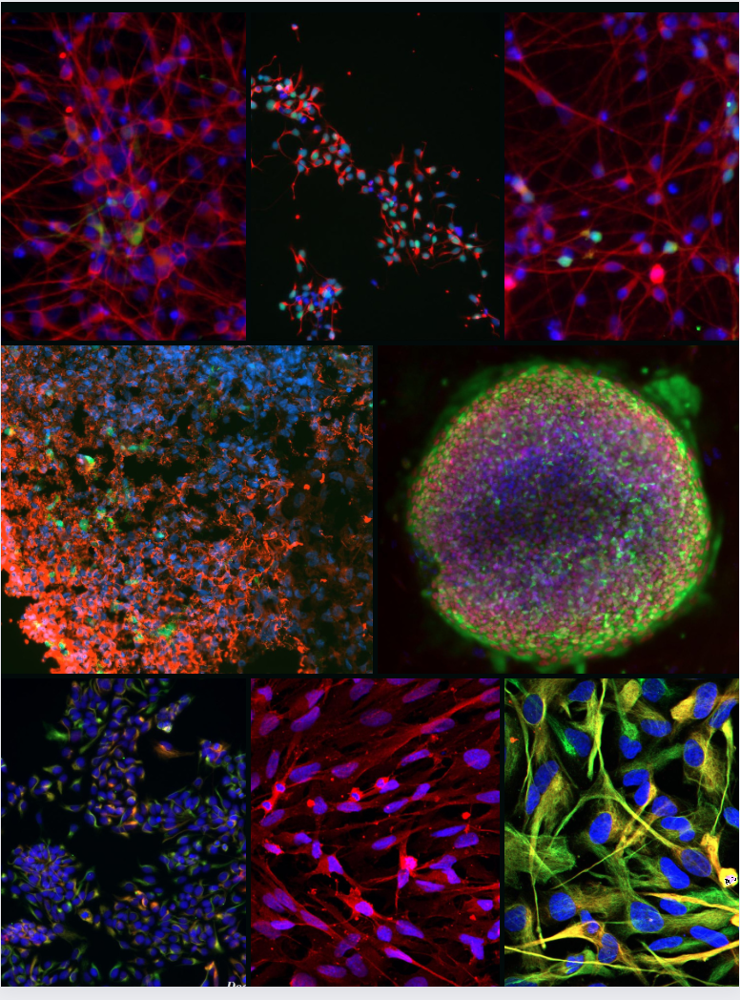
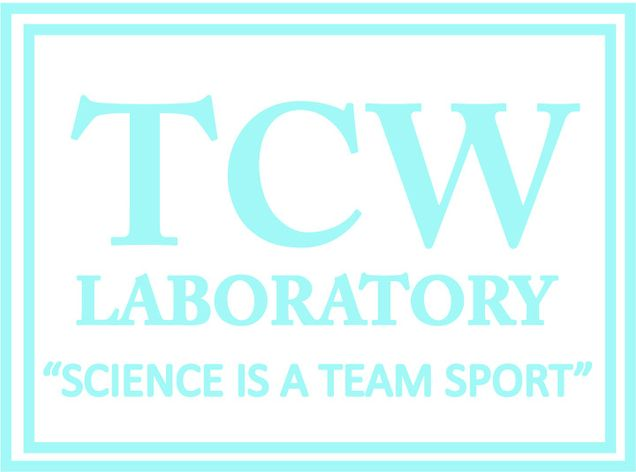
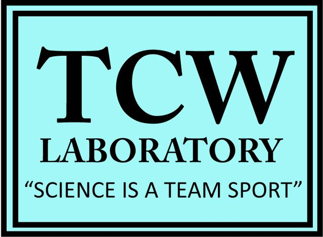
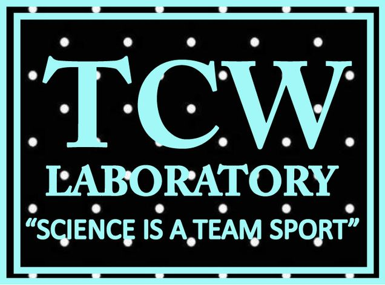

Research Interests
Dr. Julia TCW received Ph.D. and A.M. in Molecular and Cellular Biology from Harvard University with research studies in induced pluripotent stem cell (iPSC) reprogramming in the Department of Stem Cell and Regenerative Biology. She then perused her postdoctoral research in the Department of Neuroscience, Ronald M. Loeb Center for Alzheimer’s Disease, Department of Genetics and Genomic Sciences at Icahn School of Medicine at Mount Sinai, New York with a research focus of the development of iPSC models and study Alzheimer’s disease (AD) genetics. She achieved Druckenmiller Fellowship award from New York Stem Cell Foundation, 2022 Toffler Scholar award from Karen Toffler Charitable Trust, Alzheimer's Research award from BrightFocus Foundation, Carol and Gene Ludwig Award for Neurodegeneration Research, Edward N. and Della L. Thome Memorial Foundation Award, and K, R, and U awards from NIH-NIA.
Dr. TCW's laboratory works toward Alzheimer's disease therapeutics using human genomics, iPSC-derived CNS cell models, CRISPR genome editing, and multi-omics integration. The lab identifies functional genes and molecular pathways in disease-relevant brain cell types, deciphers mechanisms of AD genetic risk, and builds human model systems for therapeutic discovery.



Diversity in Our Lab
The TCW lab is committed to cultivating an inclusive and collaborative work environment where members are empowered to freely and openly share their different views, ideas and experiences. Our goals is to provide equal opportunities to applicants for employment regardless of race, religion, ethnicity, gender identity or expression, sexual orientation, age, disability status, socioeconomic status, or citizenship and immigration status. We feel maintaining a diverse and inclusive lab environment fosters creativity and the passion for science that drives novel discoveries.